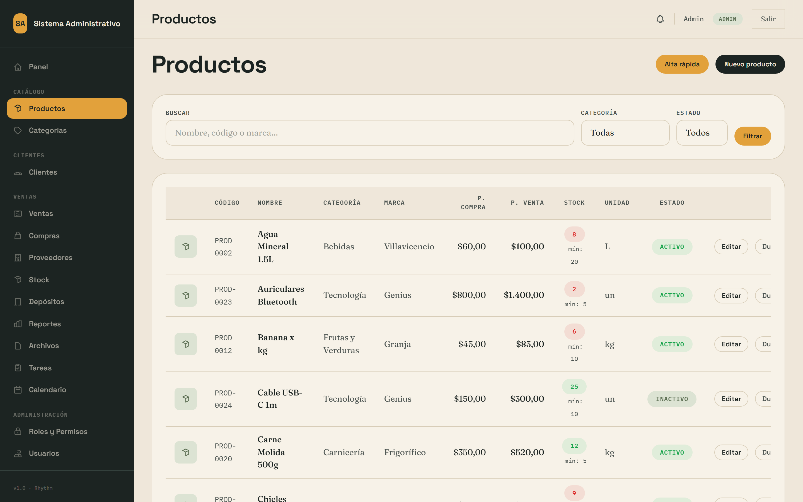
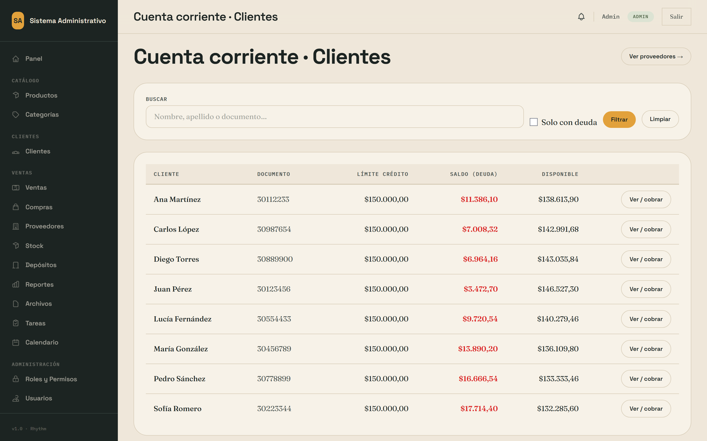
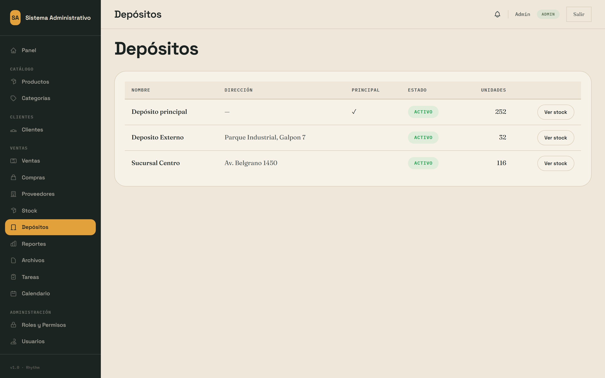
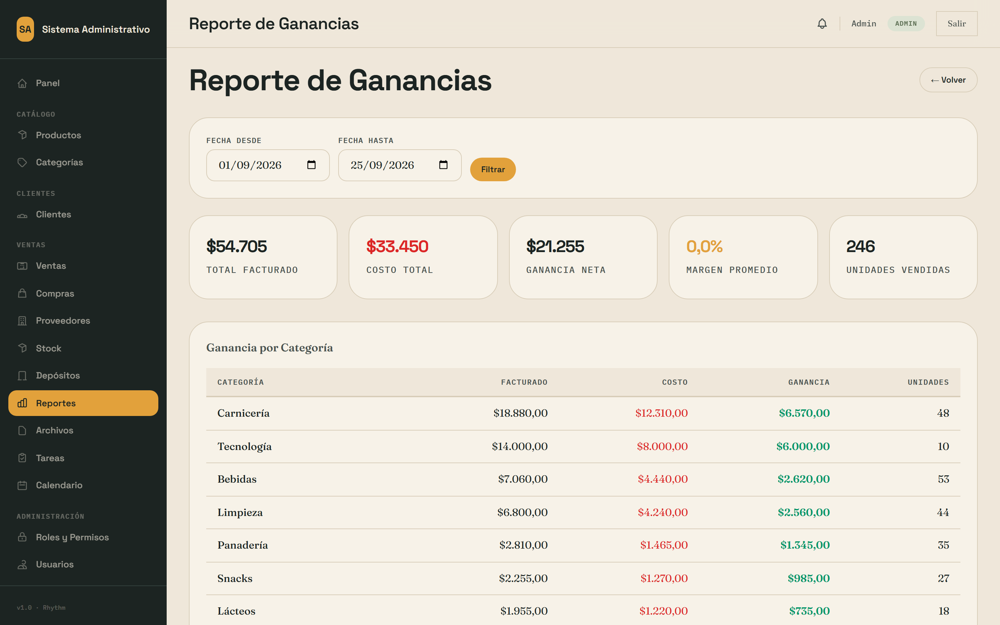
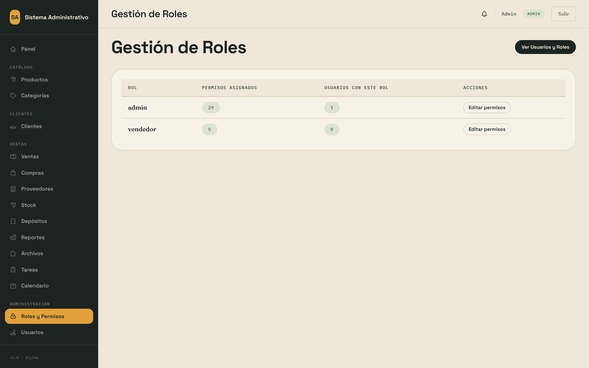

Sistema Administrativo — ventas, stock, caja y cuentas corrientes
Versión 1 · noviembre 2026 · Las capturas son del entorno de demostración (datos de ejemplo), no de un negocio real.
1. Ingresar y proteger la cuenta
Entrá a la dirección que te dio quien instaló el sistema e iniciá sesión con tu correo y contraseña.
Doble factor (obligatorio para el administrador): en el primer ingreso el sistema te lleva a Perfil. Instalá una app de autenticación (Google Authenticator, Authy, Bitwarden…), escaneá el QR y escribí el código de 6 dígitos.
Guardá los códigos de recuperación en un lugar fuera del sistema (papel en la caja fuerte, gestor de claves). Cada uno sirve una sola vez y se muestran una sola vez.
La contraseña tiene que tener 12 caracteres o más. Después de 5 intentos fallidos el sistema espera unos minutos.
Si perdés el teléfono y los códigos: escribile al soporte. Lo desactiva desde el servidor (usuario:quitar-doble-factor) y volvés a activarlo en tu próximo ingreso.
2. Cargar productos, clientes y proveedores
De a uno: menús Productos, Clientes, Proveedores → botón Nuevo.
Desde Excel/CSV: menú Importar. Elegí qué importás, subí el archivo y revisá el resumen. Antes de importar todo, probá con 5 filas.
El stock mínimo de cada producto marca cuándo aparece en rojo y en el aviso diario de reposición.

Productos: los que están en stock crítico se ven marcados.
3. Vender
Ventas → Nueva venta. Elegí el cliente (se busca escribiendo), agregá productos y cantidades.
Elegí cómo se cobra (efectivo, transferencia, tarjeta, cuenta corriente). Para cobrar en efectivo tiene que haber una caja abierta.
El sistema no deja vender más de lo que hay en stock y numera solo los comprobantes.
Cada vendedor ve y anula solo sus propias ventas; un supervisor ve todas.
Desde el detalle de la venta imprimís el PDF.
Nueva venta con el total calculado.
El comprobante que emite el sistema es interno: no es una factura fiscal. La factura electrónica la emite el proveedor certificado que elijas junto con tu contador.
4. Caja: abrir, mover y cerrar
Caja → Abrir con el efectivo con el que arrancás.
Durante el día: las ventas en efectivo suman solas; los gastos se cargan como egreso con su concepto.
Cerrar caja: contá el efectivo y escribilo. El sistema calcula inicial + ingresos − egresos y te muestra la diferencia. Diferencia 0 = la caja cierra. Si no es 0, anotá el motivo en observaciones.
Caja con su arqueo.
5. Devoluciones
Desde el detalle de la venta → Devolución: elegí los productos y cantidades (no se puede devolver más de lo vendido). El stock vuelve solo y baja el saldo del cliente.
6. Quién me debe: cuentas corrientes
Cuentas muestra el saldo de cada cliente y proveedor. Al cobrar, registrá el pago: el sistema lo aplica a las deudas más viejas primero.

Cuenta corriente de un cliente.
7. Stock, depósitos y compras
Compras suma stock al recibir la mercadería; Órdenes de compra sirven para pedir y recibir en partes.
Depósitos → Transferir mueve mercadería entre depósitos; los ajustes de stock quedan registrados en la auditoría (quién y cuándo).

Stock por depósito.
8. Reportes y ganancia
Reportes: ventas por período, rentabilidad por producto y categoría, stock crítico, rankings. Se exportan a Excel.

Rentabilidad con margen.
9. Usuarios y permisos
Usuarios → Nuevo: contraseña de 12+ caracteres y un rol. Para dar de baja a alguien desactivalo (no se borra: sus ventas quedan). Se desconecta en el acto.
Roles: elegí qué puede hacer cada rol. Dale a cada persona lo mínimo que necesita.
Auditoría muestra quién cambió qué y cuándo; no se puede editar ni borrar.

Roles y permisos por módulo.
10. Copias de seguridad
El sistema hace una copia cada noche y guarda las últimas 14. Ahí también podés crear una a mano y descargarla.
Antes de cualquier cambio grande (importar miles de filas, cambiar precios) creá una copia.
Restaurar reemplaza todo por lo que había en la copia. Hacelo con ayuda del soporte la primera vez.
11. Qué hago si algo falla
Síntoma
Qué hacer
No abre el sistema
Esperá 2 minutos y recargá. Si sigue, escribile al soporte con el texto exacto de la pantalla (ver runbook).
«No hay stock suficiente»
Revisá el stock del depósito; si el físico es mayor, hacé un ajuste con motivo.
No me deja cobrar en efectivo
Falta abrir la caja.
Olvidé la contraseña
«¿Olvidaste tu contraseña?» en el login; o un administrador te la cambia.
Perdí el doble factor
Usá un código de recuperación o pedile al soporte que lo desactive.